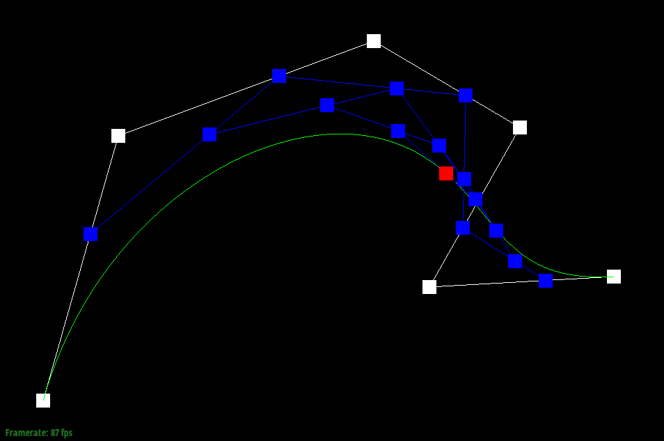
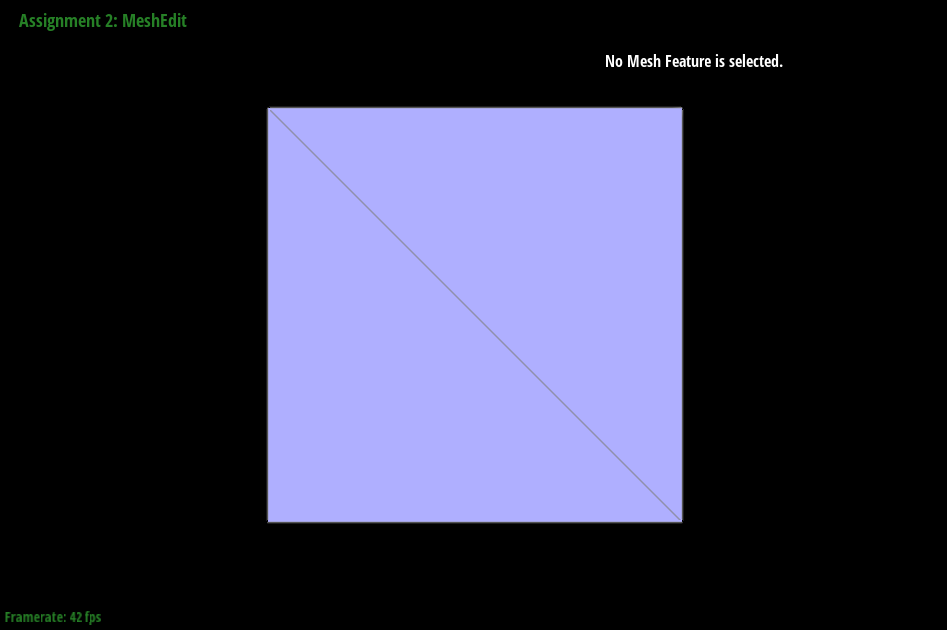

In this assignment, we implemented Bezier curves and surfaces using de Casteljau's algorithm, explored triangle mesh manipulation with the half-edge data structure, and applied Loop Subdivision for mesh upsampling. We developed methods for computing vertex normals, edge flips, and edge splits, enabling smoother and more adaptable mesh refinement. Additionally, we experimented with alternative subdivision schemes, including Butterfly and Adaptive Loop subdivision, to better preserve sharp features. Through algorithmic implementation, debugging, and visual analysis, we gained a deeper understanding of geometric modeling, subdivision techniques, and their impact on mesh quality.
Section I: Bezier Curves and Surfaces
Part 1: Bezier Curves with 1D de Casteljau Subdivision
Briefly explain de Casteljau's algorithm and how you implemented it in order to evaluate Bezier curves.
De Casteljau's algorithm is a recursive method used to evaluate Bezier curves at a given parameter \(t\). It works by linearly interpolating between control points until only one point remains, which is the point on the curve at \(t\). Given our control points, we do the following:
For each pair of consecutive points, compute a new point using linear interpolation: \( P_{new} = (1 - t) \times P_i + t \times P_{i+1} \).
Repeat Step 1 on the new set of points.
Continue recursively until only one point is left — this is the curve point at \(t\).
In code, given \( n \) control points, we use a while loop that repeatedly calls evaluateStep on our current list of control points until its length reaches \( 1 \). Within the evaluateStep function, given \( n \) points, we perform \( n - 1 \) interpolations by iterating through the list of points using a for loop.
Take a look at the provided .bzc files and create your own Bezier curve with 6 control points of your choosing. Use this Bezier curve for your screenshots below.
We create a Bezier curve using the following control points: \[ (0.1, 0.1), (0.2, 0.8), (1.0, 0.9), (1.2, 0.6), (0.9, 0.2), (0.5, 0.3) \]
Show screenshots of each step / level of the evaluation from the original control points down to the final evaluated point. Press E to step through. Toggle C to show the completed Bezier curve as well.
Step 0
Step 1
Step 2
Step 3
Step 4
Step 5
Completed Bezier Curve
Show a screenshot of a slightly different Bezier curve by moving the original control points around and modifying the parameter \(t\) via mouse scrolling.
The full shifted curve is as follows:
Modifying the parameter \(t\), we get the following curves:
Very Low \(t\)
Low \(t\)

High \(t\)
Very High \(t\)
Part 2: Bezier Surfaces with Separable 1D de Casteljau
Briefly explain how de Casteljau algorithm extends to Bezier surfaces and how you implemented it in order to evaluate Bezier surfaces.
De Casteljau's algorithm extends to Bezier surfaces by applying the same recursive interpolation used for Bezier curves, but in two parameters, \(u\) and \(v\).
For a Bezier surface defined by a grid of control points, apply 1D de Casteljau along each row of points with a fixed \(u\).
Once we have one interpolated point from each row, apply 1D de Casteljau on these points along \(v\).
The final result is the surface point at parameters \((u, v)\).
In code, given an \( n \times n \) grid of control points, we use a for loop that repeatedly calls evaluate1D using \(u\) on each row of points to produce a list of n intermediate points. Then, we call evaluate1D on this new row using \(v\) to get our final point. Within the evaluate1D function, we repeatedly call evaluateStep, similar to the process described in Part 1.
Show a screenshot of bez/teapot.bez (not .dae) evaluated by your implementation.
Section II: Triangle Meshes and Half-Edge Data Structure
Part 3: Area-Weighted Vertex Normals
Briefly explain how you implemented the area-weighted vertex normals.
To compute the area-weighted normal at a vertex, we iterate over all incident faces using the halfedge structure starting from this->halfedge(). At each halfedge, we retrieve the corresponding face \(f\) and its three vertices, stored in an array pts. The area of face \(f\) is then calculated as
\[
\text{area} = \frac{1}{2} \| ( \text{pts}[1] - \text{pts}[0] ) \times ( \text{pts}[2] - \text{pts}[0] ) \|
\]
The area-weighted face normal is then area * f->normal(), which is added to an accumulator Vector3D variable. This process repeats for each outgoing halfedge, which we iterate through by calling h = h->twin()->next(). After processing all adjacent faces, we normalize the final vector using ret.unit(). During this traversal, we also check whether the current halfedge is on a boundary and skip its corresponding face if necessary.
Show screenshots of dae/teapot.dae (not .bez) comparing teapot shading with and without vertex normals. Use Q to toggle default flat shading and Phong shading.
Flat Shading
Phong Shading
Part 4: Edge Flip
Briefly explain how you implemented the edge flip operation and describe any interesting implementation / debugging tricks you have used.
Before Edge Flip
After Edge Flip
We first drew a detailed diagram as seen in this link, making sure to label all visible halfedges, edges, vertices, and faces relevant to the two triangles we are performing our operation relative to. Although this seems unnecessary, this ultimately saved us a lot of time when debugging. Our implementation was then structured as follows:
We first check if the edge is on a boundary using isBoundary. If the edge is on a boundary, we simply return the original EdgeIter.
If not, we create and assign 10 HalfedgeIter objects, 4 VertexIter objects, 4 EdgeIter objects, and 2 FaceIter objects, as labled in our diagram. Note that we do not use all of them later, but we include them for thoroughness and to assist with debugging.
Next, we reassign the neighbors of 6 existing halfedges to reflect the edge flip.
Finally, we reassign the halfedges of the 2 vertices and 2 faces whose halfedges may have been altered by this operation and return the flipped edge.
Show screenshots of the teapot before and after some edge flips.
Before Edge Flips
After Edge Flips
Write about your eventful debugging journey, if you have experienced one.
Thanks to the meticulous labeling and preprocessing we carried out, we were fortunate to avoid any major bugs throughout our implementation. However, we did encounter a minor bug caused by a small typo in one of our setNeighbors function calls. To resolve this, we carefully cross-referenced our diagram with our code, checking each halfedge assignment to ensure that they matched exactly. This process not only helped us identify and fix the typo quickly but also reinforced the accuracy of our overall structure, giving us greater confidence in the correctness of our implementation.
Part 5: Edge Split
Briefly explain how you implemented the edge split operation and describe any interesting implementation / debugging tricks you have used.
Before Edge Split
After Edge Split
We first drew a detailed diagram, as seen in this link, carefully labeling all visible halfedges, edges, vertices, and faces relevant to the two triangles involved in our operation. Although this may seem unnecessary, it ultimately saved us a significant amount of time during debugging. With this reference in place, our implementation proceeded as follows:
We first check if the edge is on a boundary using isBoundary. If the edge is on a boundary, we follow a different procedure (detailed later in the Extra Credit section).
If not, we create 10 HalfedgeIter objects, 4 VertexIter objects, 1 EdgeIter object, and 2 FaceIter objects, as labeled in our diagram. While we do not use all of these later, we include them for thoroughness and to assist with debugging.
We also create 6 new HalfedgeIter objects, 1 new VertexIter object, 3 new EdgeIter objects, and 2 new FaceIter objects, all of which result from the edge split.
For these newly created objects, we populate their fields accordingly. For the new vertices, faces, and edges, we assign them to their respective halfedges. For the new halfedges, we set their neighbors as specified in the diagram. Additionally, we set the position of the new vertex to the average of v0 and v1 from the diagram.
Next, we reassign the neighbors of 5 existing halfedges to reflect the edge flip.
Finally, we reassign the halfedges of the 1 vertex and 2 edges whose halfedges may have been altered by this operation and return the newly created vertex.
Show screenshots of a mesh before and after some edge splits.
Before Edge Splits
After Edge Splits
Show screenshots of a mesh before and after a combination of both edge splits and edge flips.
Before Edge Splits + Flips
After Edge Splits + Flips
Write about your eventful debugging journey, if you have experienced one.
Thanks to the meticulous labeling and preprocessing we did in Part 4, we were fortunate to avoid any major bugs throughout our implementation. One bug we did encounter occurred in Step 5, where we forgot to reassign the neighbors of one of the halfedges. However, by carefully cross-referencing our diagram with our code, we were able to identify and resolve the issue relatively quickly. While working on the Extra Credit, we also realized that we had forgotten to divide the halfedges on the boundary face. Once again, we were able to fix this by referring back to our diagram, which we adjusted to account for the boundary case.
Extra Credit: If you have implemented support for boundary edges, show screenshots of your implementation properly handling split operations on boundary edges.
Since we had a labeled diagram, implementing edge splitting for boundary edges was relatively easy. We simply took the elements that would not be present or relevant, such as {h4, h5, h7, h8, v3} and did not reassign them, as we no longer assume that the opposing face is a triangle (since it is a boundary face). Similarly, we did not create new elements such as {f3, e3, h14, h15} for the same reason. After removing these operations, we also slightly modified the neighbor assignment for h13 as we could no longer assume it was part of a triangular face.
Before Edge Splits
After Edge Splits
Part 6: Loop Subdivision for Mesh Upsampling
Briefly explain how you implemented the loop subdivision and describe any interesting implementation / debugging tricks you have used.
For the most part, we followed the comments already given to us in a 5-step procedure:
For a given vertex, we loop through and collect all of the adjacent vertices. By using the degree of the vertex, and the formulas given to us, we then update the newPosition of each vertex. Additionally, we set isNew as false for each vertex.
By again looping through nearby vertices, we update the newPosition of each edge using the formula given to us. Additionally, we set isNew as false for each vertex.
Looping through the original edges, we split each edge, making sure to markisNew for both the new vertex and new edges. At this point, we also assign the previously computed edge newPosition to the newly created vertex.
Looping through all edges, we flip any new edge that connects an old and new vertex by using the previously set isNew values.
Finally, we update the position values for all vertices to their corresponding newPosition values.
In this section, we encountered a few problematic bugs. For Steps 2 and 3, we realized that if we were to set all newly added edges as new, we would mistakenly set part of the old edge to also be set as new, which messed up the edge splits. This mattered, since in Step 4, we flip all new edges, but this does not include the split halves of the original edge. Additionally, we forgot to reset the values of isNew at the start of every upsample call, meaning that multiple subdivisions did not work as intended. Debugging these errors was pretty painful, but one thing that helped was first implementing Steps 3 and 4, as we could check whether 4-1 subdivision was working properly. After that, debugging the other steps was much easier.
Take some notes, as well as some screenshots, of your observations on how meshes behave after loop subdivision. What happens to sharp corners and edges? Can you reduce this effect by pre-splitting some edges?
0 Subdivisions
1 Subdivision
3 Subdivisions
5 Subdivisions
Corners and edges become smoothed out as a result of upsampling and the new vertex positions that are generated. The overall shape appears noticeably smoother. Manually pre-splitting before running the algorithm helps reduce this effect, as it provides the algorithm with more control points along high-curvature edges, allowing it to better preserve sharp features. However, we also observe that the additional edges created during splitting can cause the shape to become more distorted, as the algorithm has more control points to manipulate.
Load dae/cube.dae. Perform several iterations of loop subdivision on the cube. Notice that the cube becomes slightly asymmetric after repeated subdivisions. Can you pre-process the cube with edge flips and splits so that the cube subdivides symmetrically? Document these effects and explain why they occur. Also explain how your pre-processing helps alleviate the effects.
You can preprocess the cube by splitting each face into four triangles. This ensures that all faces have a consistent structure before subdivision. With this setup, when you subdivide, the algorithm applies the same pattern to every vertex/face, keeping the subdivisions symmetrical. Without this step, faces may subdivide differently based on their initial orientation, leading to asymmetry. Preprocessing helps maintain uniformity and produces smoother, more consistent results.

0 Subdivisions
0 Subdivisions
2 Subdivisions
2 Subdivisions
4 Subdivisions
4 Subdivisions
Extra Credit: Support meshes with boundary.
To implement boundary support, we first modified the weightage of the original vertices and newly created vertices to match the two-stage process as shown in the slides. Additionally, since we had already implemented edge splitting for boundary edges in Part 5, we were able to use that here, making sure that the edge flipping in the upsample function was not flipping the boundary edges.
Original Mesh
No Boundary Support
Boundary Support
Extra Credit: Implement additional subdivision schemes.
The first subdivision scheme we implemented was butterfly subdivision. This method of subdivision is very similar to that loop subdivision except it has discrepancies in the way the new vertex positions are calculated. Whilst it is still a weighted sub of nearby vertices, butterfly upsampling preserves sharper features compared to loop subdivision as it weighs a greater number of vertices(8 in comparison to 4). The actual formula for calculating the new vertex positions is:
\[
V' = \frac{1}{2} (V_1 + V_2) + \frac{1}{8} (V_3 + V_4) - \frac{1}{16} (V_5 + V_6 + V_7 + V_8)
\] where v1 and v2 are the endpoints of the edge being divided, v3 and v4 are the endpoints of the vertices in the adjacent triangle, and v5-v8 are the four corners in the second-ring neighbours of the edge. Also, we note that the the original vertices are not repositioned.
Butterfly Subdivision
The next method implemented is adaptive loop subdivision as described in this paper. We added a condition of subdivision only if the edge in question was between two faces whose dihedral angle was less than 30 degrees. Smooth areas get subdivided, while sharp edges are preserved. Additionally, it prevents over-subdividing sharp features, keeping crisp edges intact.
Adaptive Loop Subdivision
We also implemented uniform loop subdividing. This is a technique to increase resolution without smoothing. It involved not updating the vertex positions after subdivision, and essentially just seems like breaking the mesh into infinitely smaller triangles without smoothing.
Uniform Loop Subdivision
(Optional) Section III: Potential Extra Credit - Art Competition: Model something Creative